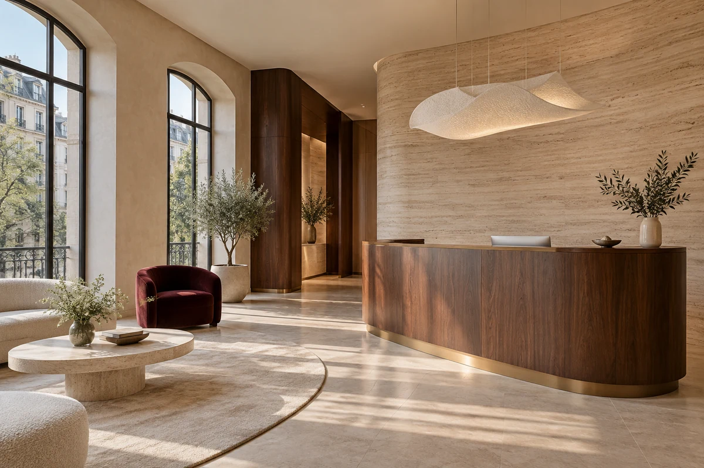

LE NEZ
Rhinoplastie
Penser la forme du nez en harmonie avec le visage, en tenant compte de la respiration.
Comprendre la rhinoplastieRHINOPLASTIE & CHIRURGIE PLASTIQUE
Chaque visage raconte une histoire.
Votre projet commence par
une rencontre,
une écoute, un regard attentif.
Votre singularité,
au cœur de
la réflexion.
Photographie d’illustration
UNE APPROCHE PERSONNELLE
Mr Mattia Coda
Une intervention se réfléchit à partir de votre histoire, de vos attentes et de ce qui fait votre identité.
Le dialogue avec votre chirurgien permet d’explorer les possibilités, d’en comprendre les limites et de prendre le temps de décider. Une démarche personnelle, à votre rythme.
Comment se déroule votre parcoursLES INTERVENTIONS
Des repères pour comprendre les possibilités
et préparer un échange avec votre chirurgien.
Penser la forme du nez en harmonie avec le visage, en tenant compte de la respiration.
Comprendre la rhinoplastiePaupières, visage, oreilles : considérer les traits dans leur ensemble et discuter d’un projet adapté.
La chirurgie des paupières, le lifting du visage et la correction des oreilles répondent à des demandes différentes. L’examen permet de discuter l’indication, les cicatrices, les suites et les alternatives.
Poitrine et silhouette : une réflexion qui tient compte de votre morphologie et de vos attentes.
Chirurgie mammaire, plastie abdominale ou lipoaspiration : chaque intervention possède ses indications et ses limites. La consultation permet de distinguer une attente esthétique d’un besoin réparateur.
LE NEZ, AU CŒUR DU VISAGE
Une rhinoplastie modifie la forme ou les proportions du nez. Son indication se discute après un examen et un échange approfondi.
En parler en consultationLe profil et la face, mais aussi la peau, les structures du nez et la respiration, font partie de l’évaluation.
Les souhaits sont confrontés aux possibilités de l’intervention. Une simulation reste un support d’échange et ne garantit pas le résultat.
Les suites, les limites, les alternatives et les risques sont expliqués avant toute décision. Choisir de ne pas être opéré reste une possibilité.
Toute chirurgie comporte des risques. Une consultation individuelle est indispensable pour évaluer votre situation.
UN PARCOURS, À VOTRE RYTHME
Avant, pendant, après : des échanges et des repères pour avancer en confiance.

LA RENCONTRE
Vos attentes, votre histoire médicale et un examen pour comprendre votre projet.
LA RÉFLEXION
Les possibilités, les risques et un devis détaillé, avec le temps nécessaire pour décider.
L’INTERVENTION
Une préparation définie avec votre chirurgien, adaptée à l’acte et à votre situation.
LE SUIVI
Des consultations de contrôle et des consignes personnalisées pour accompagner les suites.
QUELQUES REPÈRES
Des réponses pour préparer
votre première rencontre.
Non. Elle permet de faire le point, de poser vos questions et de comprendre les options. Vous pouvez prendre le temps de réfléchir, demander un autre avis ou ne pas donner suite.
Oui, une gêne respiratoire peut faire partie du bilan. L’examen recherche sa cause et détermine si un geste fonctionnel est indiqué, seul ou associé à un geste esthétique. Une amélioration ne peut pas être promise sans évaluation.
Le résultat évolue progressivement avec la diminution du gonflement. Cette évolution prend plusieurs mois et varie selon l’intervention et les personnes. Votre chirurgien précisera les étapes du suivi.
Ils comprennent notamment le saignement, l’infection, les risques liés à l’anesthésie, une gêne respiratoire persistante ou un résultat qui ne correspond pas aux attentes. Cette liste n’est pas exhaustive : l’information doit être adaptée à votre situation.
Un devis personnalisé doit préciser l’intervention envisagée et les postes de coût. Les honoraires, les frais d’établissement, l’anesthésie et le suivi sont à discuter en consultation. Aucun tarif réel n’est présenté dans cette maquette.
VOTRE PREMIÈRE CONSULTATION
Exprimer vos attentes. Poser vos questions.
Envisager la suite,
à votre rythme.
Maquette de présentation — aucun rendez-vous n’est réservé.
POUR VOTRE RENDEZ-VOUS
Apportez la liste de vos traitements et les documents utiles à votre consultation.